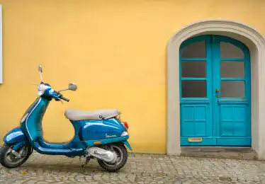
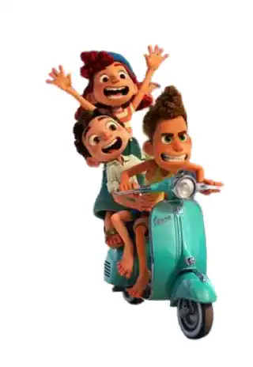

Petit coin de paradis
Ton petit coin de paradis. En cinq jours, il a conquérit le cœur de toi, tes sœurs, et sans aucun doutes, les milliers d’autres visiteurs. Situé au nord-ouest de l’Italie, dans la province de la Spezia, qui est la plus grande ville à côté de ces magnifiques villages. Ce qu’on appelle « les cinq terres » sont en réalité 5 villages perchés sur des collines, les pieds dans la Méditerranée : Riomaggiore, Manarola, Corniglia, Vernazza, et enfin Monterosso al Mar. Tous plus idylliques les uns que les autres, ces villages se caractérisent par leurs charmantes façades vivement colorées qui contrastent avec le bleu de la mer.
L’accessibilité
Accessible par train, avec une magnifique vue sur la mer, le trajet ne sera jamais aussi agréable. Ses chemins étroits dans les villages rendent difficiles l’accès en voiture. Mais après tout, que serait un séjour en Italie sans une escapade en Vespa ?
Les activités à faire
Le baignades dans les criques de pécheurs seront rafraichissantes et avec une vue sur les villages magnifiques depuis la mer. L’eau est turquoise et abrite de nombreux poissons. Au-dessus de ses villages, sur le flan de montagnes, des centaines de vignes qui prennent le soleil. Nombreuses sont les activités à faire au sein des Cinque Terres, balades et randonnées sur les sentiers, dans laquelle vous nécessiterez une bonne paire de chaussures, les villages étant tous en cote ou en escaliers. Mais aussi une dégustation de vin local. En effet les vignes, situées juste derrière le village, prennent le soleil dans un cadre parfait pour elles, dans les collines. Admirer le coucher de soleil ou encore faire du lèche vitrine… Mais au final, quoi de mieux que d’admirer le paysage en mangeant une bonne pizza locale ?
Un site classé
Les Cinque Terres, ou devrais-je dire « Cinque Teare », a récemment été classé au patrimoine mondiale de l’UNESCO. Ils vous feront tomber amoureux de la vraie Italie, comme je l’ai fait en voyage avec mes sœurs. J’en garde un souvenir plein de nostalgie. Et Disney a d’ailleurs également repéré les lieux… La sortie du dessin animé « Luca », dans lequel le personnage principal est originaire de ce paradis italiens, illustre parfaitement ces villages, plus précisément celui de Vernazza. Cela semble être une magnifique représentation de la magnifique région de Ligurie.
Chronologiquement
XIe siècle
Les premiers documents historiques mentionnant les Cinque Terres
XVIe siècle
Renforcement des vieilles fortifications et construction des nouvelles tours de défense
XVIIe siècle
Réalisation de la voie ferrée entre la Spezia et Gennes qui mit fin à l’isolement des villages mais entraina l’abandon des activités traditionnelles
L’accroissement de la pauvreté fut une des conséquences durant une longue période
1960
Renouveau de la région dès les années 60 grâce aux nombreux touristes venant de toute l’Europe